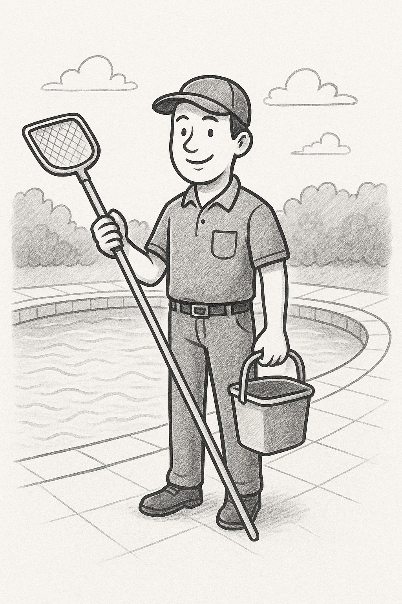

📜 À propos de moi
🛠️ Pisciniste professionnel à Cajarc et dans le Lot (46)

Pisciniste à Cajarc et dans tout le Lot (46), j'interviens depuis plusieurs années pour l'entretien complet des piscines. Passionné par le monde aquatique, j'ai fait de cette passion un métier que j'exerce avec sérieux et précision. Mon objectif est simple : garantir à chaque client une piscine propre, sûre et agréable à utiliser tout au long de l'année. 💧
Chaque bassin étant unique, je prends le temps d'évaluer vos besoins afin de proposer des prestations adaptées : nettoyage régulier, contrôle et équilibrage de l'eau, vérification des équipements ou encore maintenance des systèmes de filtration. J'utilise des méthodes fiables et respectueuses de l'environnement pour assurer une eau claire et saine, durablement. 🌿
J'apprécie également le contact avec mes clients : je partage volontiers mes conseils pour vous aider à profiter pleinement de votre piscine sans contraintes. Que vous soyez à Cajarc, Figeac, Cahors, Villefranche-de-Rouergue ou dans les villages alentours du Lot (46), je mets mon savoir-faire et ma disponibilité à votre service. 🗺️
Professionnalisme, ponctualité et passion sont au cœur de mon travail. Si vous cherchez un pisciniste sérieux à Cajarc ou dans les environs, vous pouvez compter sur moi pour que votre piscine reste en parfait état. Mon plus grand plaisir : voir mes clients profiter sereinement de leur bassin ! ☀️